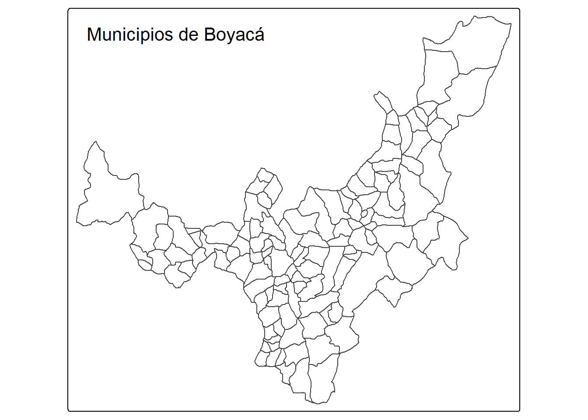
Análisis Geoespacial de Indicadores de Desarrollo Territorial en Boyacá (Colombia)
Resumen
Este informe académico titulado “Análisis Geoespacial de Indicadores de Desarrollo Territorial en Boyacá (Colombia)” tiene como objetivo principal examinar la distribución espacial de variables clave de desarrollo en los municipios del departamento de Boyacá, a partir de datos abiertos y herramientas reproducibles en R.
Objetivos
- Analizar la distribución territorial del IPM, IDF y distancia en relación de la capital en Boyacá.
- Evaluar las relaciones espaciales entre desempeño fiscal, pobreza y desarrollo humano.
- Visualizar los patrones territoriales mediante mapas coropléticos reproducibles.
- Proponer recomendaciones de política territorial basadas en evidencia.
Introducción
El departamento de Boyacá, situado en el corazón de la región andina colombiana, constituye un territorio de contrastes sociales, económicos e institucionales. A pesar de albergar importantes polos urbanos como Tunja, Duitama y Sogamoso, muchos de sus municipios rurales enfrentan desafíos estructurales, lo que dificulta el acceso equitativo a servicios y condiciones de vida adecuadas alrededor de sus 123 municipios.
Este estudio tiene como objetivo examinar de manera sistemática la heterogeneidad de Boyacá en el 2024, a través del análisis de dos indicadores clave: el Índice de Pobreza Multidimensional (IPM), el Índice de Desempeño Fiscal (IDF). A través de técnicas de visualización geoespacial y análisis exploratorio con R, se busca no solo caracterizar las disparidades internas del departamento, sino también aportar insumos para políticas orientadas a reducir las brechas y fortalecer la cohesión regional.
Metodología
Los datos utilizados provienen de fuentes oficiales como el DANE, DNP, Ministerio de Hacienda y la plataforma datos.gov.co, garantizando la trazabilidad y legalidad del uso de la información. Para el procesamiento de los datos se utilizaron herramientas del lenguaje R, en particular los paquetes tidyverse, sf, readxl, geosphere, writexl y tmap.
Para cumplir con los objetivos del estudio, se aplicaron los siguientes métodos técnicos y analíticos:
- Limpieza y estandarización de datos: Se depuraron y normalizaron las variables de cada fuente , eliminando valores faltantes y estandarizando nombres de municipios y formatos numéricos.
- Integración de bases de datos: Se unieron los conjuntos de datos del IPM y IDF con la base geoespacial de municipios de Boyacá, garantizando la integridad territorial del análisis.
- Conversión geoespacial: Los datos fueron convertidos a objetos sf para facilitar el análisis y la visualización geográfica.
- Análisis exploratorio: Se generaron tablas de resumen y estadísticas descriptivas de los indicadores, evaluando su distribución y rango.
- Visualización temática: Se diseñaron mapas coropléticos con tmap, permitiendo identificar patrones espaciales de los indicadores mediante escalas de color.
Mapa de municipios de Boyacá
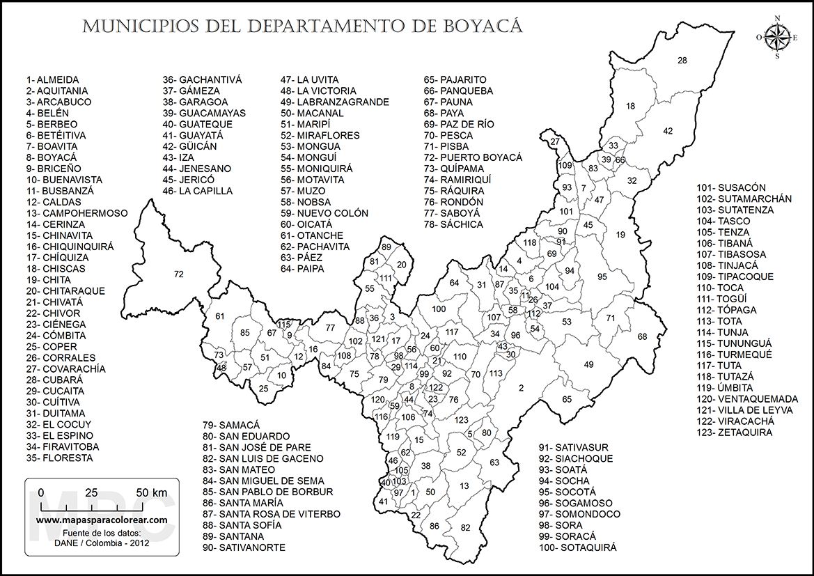
Imagen extraída de: Mapas del departamento de Boyacá para colorear
Mapa de municipios de Boyacá en GeoJSON
Con el objetivo de garantizar la reproducibilidad y estandarización de los análisis geoespaciales, se adopta por convención un archivo en formato GeoJSON que representa los límites municipales del departamento de Boyacá. Esta capa geográfica servirá como base cartográfica para la generación de todos los mapas temáticos incluidos en el documento, asegurando así la coherencia visual y territorial en la representación de los distintos indicadores.
Archivo extraído de: Laboratorio urbano Bogotá
Índice de Pobreza Multidimensional (IPM)
El Índice de Pobreza Multidimensional (IPM) es una medida integral que captura la pobreza más allá del ingreso. Desarrollado por el Departamento Administrativo Nacional de Estadística (DANE), el IPM considera varias dimensiones del bienestar, tales como la salud, la educación, y las condiciones de vivienda.
En este caso en particular, se usaron datos del IPM del año 2024, que se pueden encontrar aquí
Desglose del IPM en Boyacá:
El IPM en Boyacá se divide en tres grandes categorías:
Total: Incluye todos los municipios de Boyacá, abarcando tanto las áreas urbanas como rurales.
Cabeceras Municipales: Refleja el índice de pobreza solo para los centros urbanos o cabeceras municipales de Boyacá, donde generalmente se tiene un mayor acceso a servicios.
Centros Poblados y Rural Disperso: Considera las zonas rurales del departamento, que suelen enfrentar mayores desafíos en términos de acceso a servicios y calidad de vida
A continuación una visualización
IPM TOTAL
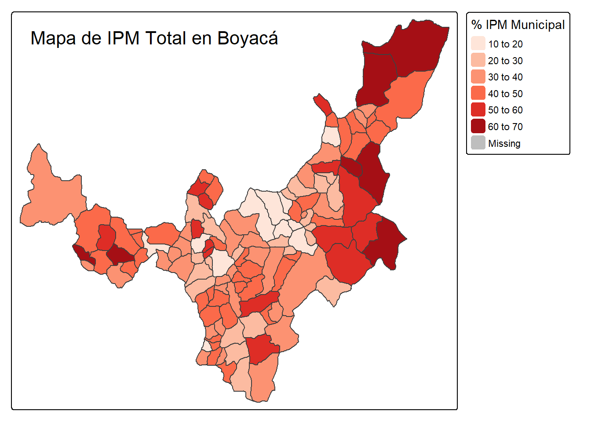
Los municipios de norte y occidente de Boyacá presentan los valores más altos de IPM, indicando una pobreza multidimensional significativa en estas zona, mientras que el sur y centro de Boyacá tiene una mayor concentración de municipios con valores bajos de IPM, reflejando mejores condiciones en términos de acceso a servicios básicos.
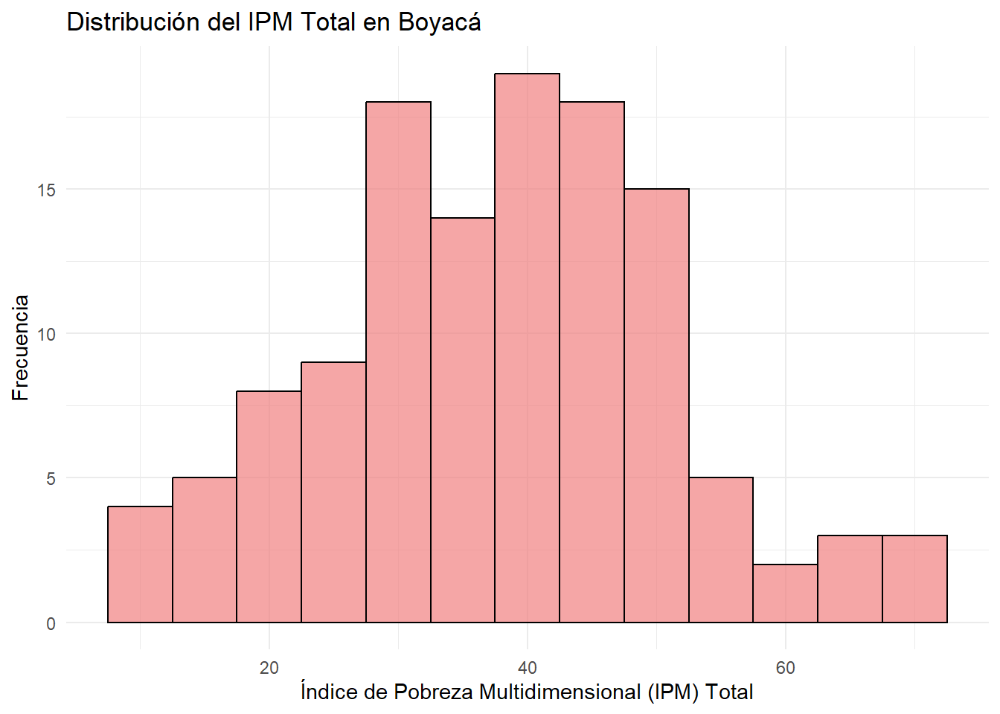
El histograma muestra una distribución relativamente equilibrada de los municipios de Boyacá, con picos que reflejan valores de pobreza media (30 a 40) y una pequeña cantidad de municipios con valores más bajos o más altos. Esto indica que gran parte de los municipios en Boyacá tienen un nivel de pobreza multidimensional moderado, con algunas zonas en los extremos con mayores y menores niveles de pobreza.
IPM CABECERAS
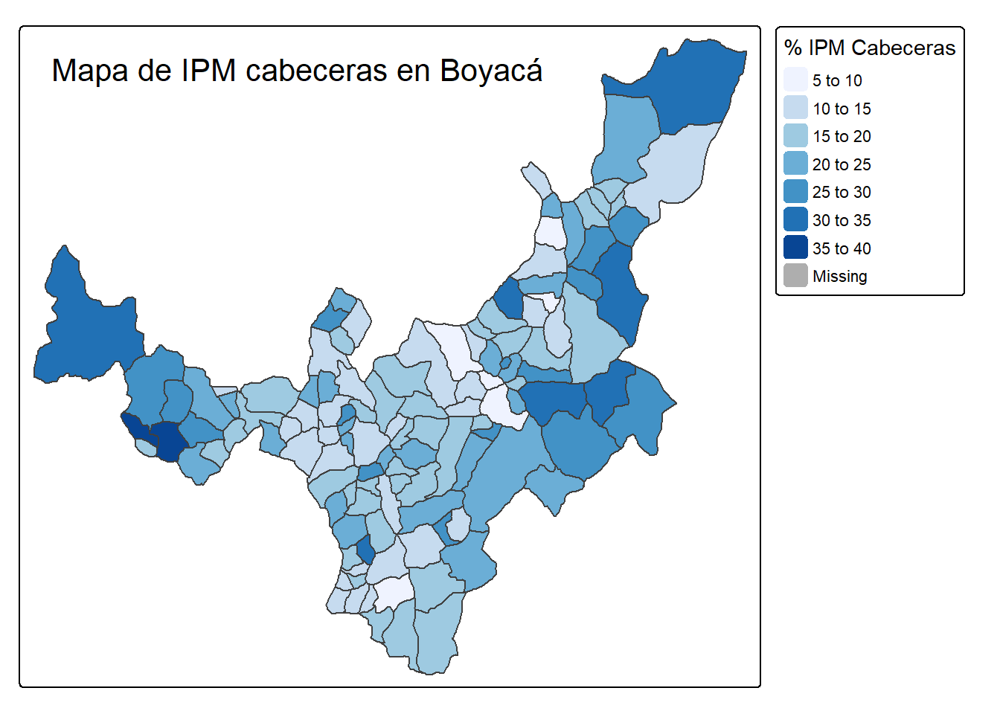
Los municipios cabeceras tienen un IPM más bajo en comparación con las áreas rurales, lo que indica que las zonas urbanas de Boyacá tienen mejores condiciones de vida. Sin embargo, hay algunas cabeceras con valores relativamente altos, especialmente en el centro y el norte de Boyacá, por ejemplo los municipios más cercanos a Tunja (la capital) tienden a tener mejores condiciones (IPM entre 5-15).
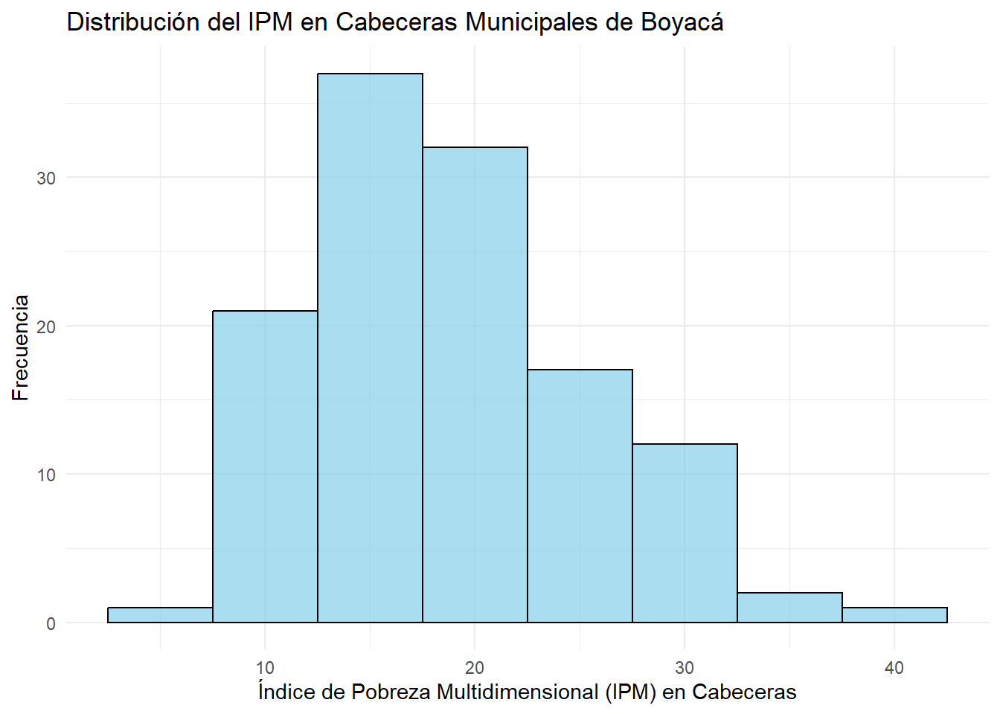
Se muestra una distribución más concentrada en valores medios de pobreza (10 a 25), con una ligera tendencia hacia los valores más bajos. Esto sugiere que las zonas urbanas de Boyacá tienen mejores condiciones de vida, aunque aún persisten diferencias significativas entre los municipios más desarrollados y los menos favorecidos dentro de las cabeceras.
IPM CENTROS POBLADOS Y RURAL DISPERSO
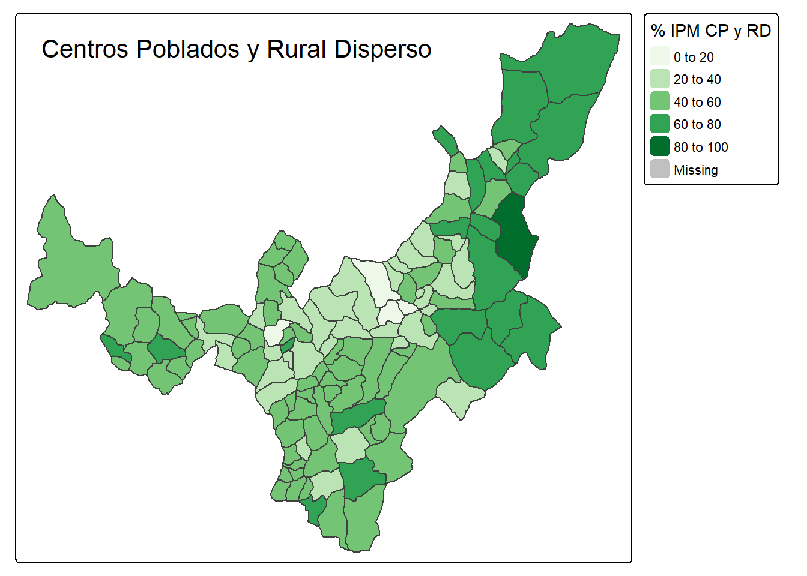
Las áreas más rurales y dispersas de Boyacá tienen los valores más altos de IPM, con muchos municipios que se encuentran en el rango de 40 a 60 e incluso 80 a 100 en algunas zonas del norte y este, también tenemos que el IPM más alto está asociado con zonas rurales más alejadas, donde el acceso a servicios como salud, educación y agua potable es más limitado.
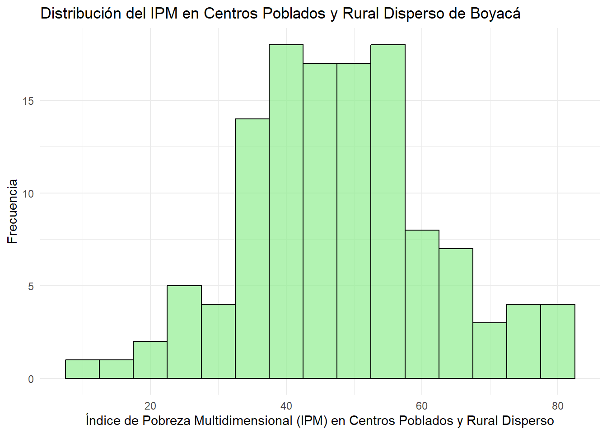
El histograma del IPM en Centros Poblados y Rural Disperso revela una concentración de municipios con un IPM alto, especialmente entre 40 y 60. Las áreas rurales de Boyacá muestran una distribución de pobreza más alta, lo que refleja las dificultades que enfrentan las zonas rurales en términos de acceso a servicios básicos, lo que contribuye a niveles más altos de pobreza multidimensional en comparación con las áreas urbanas.
Analisis del IPM:
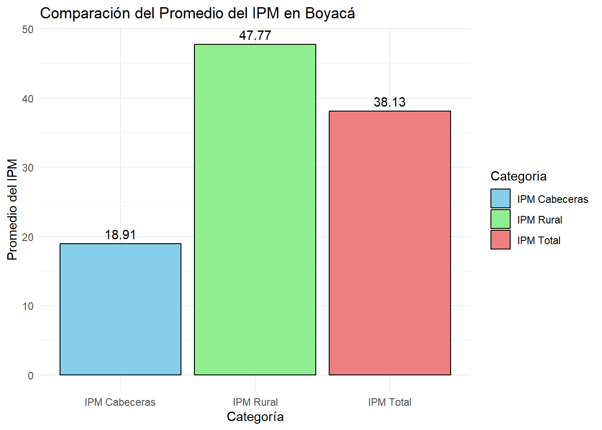
El gráfico muestra claramente que en Boyacá existen grandes desigualdades en términos de pobreza multidimensional, con las zonas rurales enfrentando niveles significativamente más altos de pobreza (IPM Rural: 44.71) en comparación con las cabeceras municipales (IPM Cabeceras: (18.91). Aunque las áreas urbanas tienen mejores condiciones, el (IPM Total para el departamento: 38.13) refleja que, a pesar de los avances en las zonas urbanas, la pobreza sigue siendo un desafío importante en todo el territorio. Estas disparidades subrayan la necesidad de políticas públicas enfocadas en mejorar las condiciones de vida en las áreas rurales.
Conclusiones generales del IPM:
- Boyacá presenta una gran disparidad territorial en términos de pobreza multidimensional, con las zonas rurales y periféricas enfrentando mayores desafíos.
- Las cabeceras municipales muestran mejores condiciones, pero aún existen desigualdades internas dentro de ellas.
- Las áreas rurales dispersas requieren políticas públicas más focalizadas para reducir la pobreza y mejorar la calidad de vida a través del acceso a servicios básicos y la mejora de infraestructuras.
Índice de Desempeño Fiscal (IDF)
El Índice de Desempeño Fiscal (IDF) es una herramienta que permite evaluar la gestión fiscal de los municipios, tomando en cuenta diversos factores que reflejan su capacidad de recaudar impuestos, gestionar los recursos públicos y mantener un nivel adecuado de solvencia fiscal. El IDF se utiliza para clasificar a los municipios en términos de su capacidad para manejar y administrar sus finanzas de manera eficiente.
En este estudio, se presenta la distribución del Índice de Desempeño Fiscal (IDF) para los municipios de Boyacá durante el año 2020, con el objetivo de identificar patrones de desempeño fiscal en el departamento, y resaltar las áreas que requieren mayores esfuerzos de mejora.
Los datos se pueden encontrar aquí
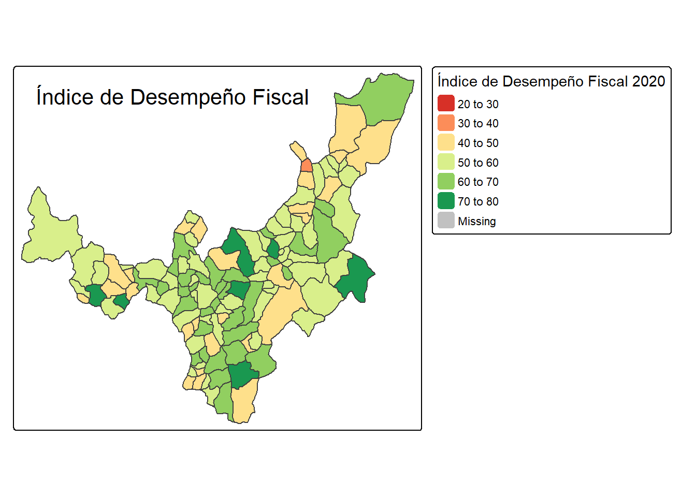
Esta visualización revela importantes diferencias en la capacidad de los municipios para gestionar sus finanzas. Municipios en el sur y centro del departamento presentan buenos índices fiscales, reflejando una gestión adecuada de los recursos, mientras que algunos municipios en el norte muestran graves dificultades fiscales, lo que podría indicar limitaciones en su capacidad de recaudación o problemas en la gestión pública local.
Este análisis es clave para diseñar políticas públicas dirigidas a mejorar la solvencia fiscal en los municipios con bajos índices, permitiendo mejorar la prestación de servicios como salud, educación e infraestructura en las áreas más vulnerables.
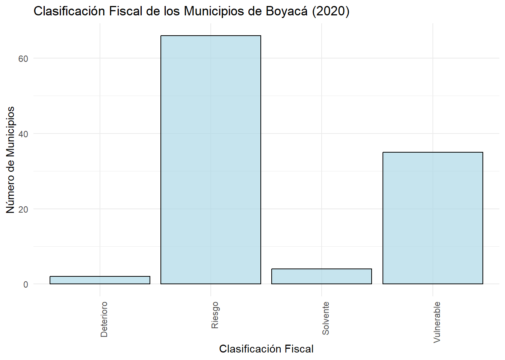
La mayoría de los municipios se encuentran clasificados en la categoría “Riesgo”, con un número significativo de municipios, lo que indica que estos municipios presentan dificultades fiscales importantes y podrían necesitar mejorar la gestión financiera para evitar problemas futuros.
Comparación entre IDF e IPM en Boyacá
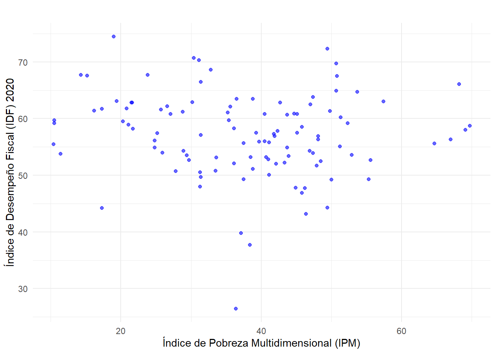
Análisis del gráfico:
Relación débil: No parece haber una relación clara entre el IDF y el IPM, ya que los puntos están distribuidos de manera aleatoria en el gráfico, sin una tendencia obvia. Es decir, no se observa una correlación fuerte entre el desempeño fiscal de los municipios y su nivel de pobreza multidimensional.
Variedad de municipios: Los municipios con alto IDF no necesariamente tienen un IPM bajo, lo que podría indicar que algunos municipios con bajo índice de pobreza aún tienen un desempeño fiscal limitado. De igual manera, algunos municipios con alto IPM pueden tener un desempeño fiscal relativamente bueno.
El gráfico sugiere que el desempeño fiscal de los municipios no está directamente vinculado con su nivel de pobreza, lo que puede indicar que otros factores (como la gestión de los recursos o las políticas fiscales locales) también influyen de manera importante en el desempeño fiscal de los municipios.
¿A qué tanta distancia están los municipios de Boyacá de su capital?
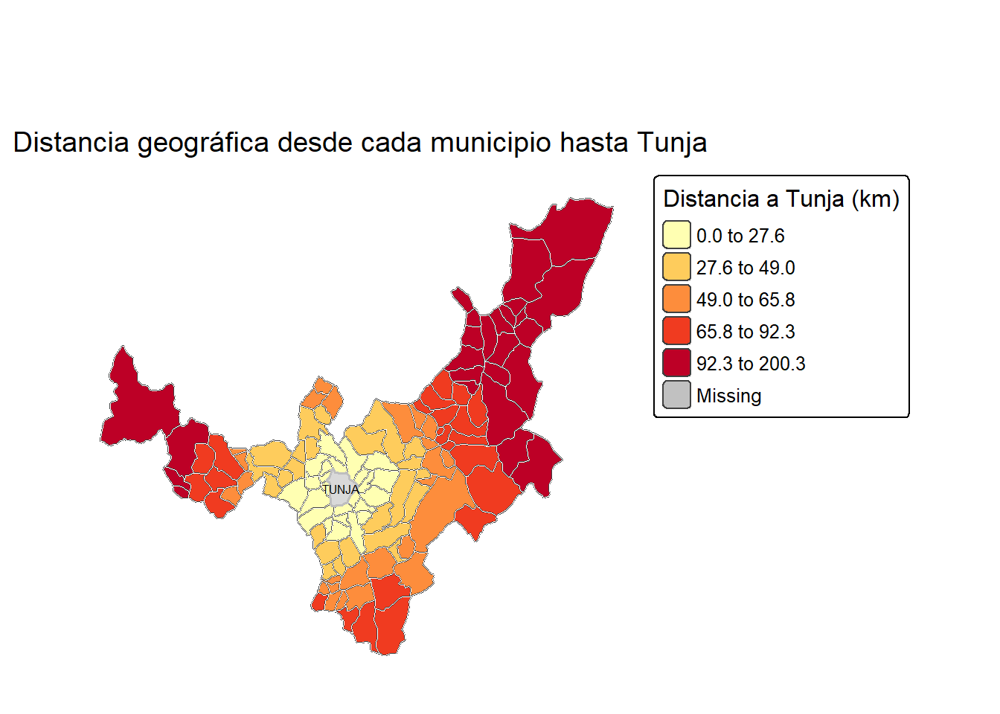
Análisis de la distancia geográfica a la capital departamental
El mapa presentado ilustra la distancia geodésica en kilómetros desde cada municipio del departamento de Boyacá hasta su capital, Tunja. A través de una representación coroplética, se evidencian variaciones espaciales significativas: mientras que los municipios del centro y el eje tunjano presentan proximidad territorial a la capital, aquellos ubicados en los extremos oriental y occidental exhiben distancias considerablemente mayores.
Esta variable permite observar patrones de accesibilidad territorial que pueden influir en la distribución de servicios, inversiones, presencia institucional y calidad de vida. En zonas rurales o más alejadas, estas distancias físicas pueden traducirse en barreras para el acceso a educación superior, salud especializada o programas gubernamentales. Por tanto, el análisis geográfico no solo es descriptivo, sino que ofrece insumos estratégicos para la planificación regional y la descentralización efectiva de políticas públicas.
Interpretación de los resultados
El análisis geoespacial de los municipios de Boyacá evidencia marcadas desigualdades territoriales que reflejan las brechas estructurales persistentes en el departamento. En cuanto al Índice de Pobreza Multidimensional (IPM), se identifican niveles significativamente más altos en zonas rurales dispersas, especialmente al norte y oriente del territorio, mientras que las cabeceras municipales presentan mejores condiciones, aunque no exentas de heterogeneidad interna.
El Índice de Desempeño Fiscal (IDF), por su parte, muestra una mayor concentración de municipios en condición de riesgo fiscal. A pesar de que algunos municipios presentan una buena gestión financiera, no se observa una correlación clara entre desempeño fiscal y pobreza multidimensional, lo que sugiere que estas dimensiones operan de forma parcialmente independiente, influenciadas por múltiples factores sociales, institucionales y políticos.
Respecto a la distancia geográfica a Tunja, se constata que los municipios más alejados tienden a coincidir con mayores niveles de pobreza y menor desempeño fiscal. Esta relación no es estrictamente causal, pero sí indica un patrón territorial donde el acceso físico a la capital puede condicionar las oportunidades institucionales, administrativas y de inversión pública.
Conclusiones
Boyacá presenta disparidades espaciales relevantes en pobreza, desempeño fiscal y accesibilidad territorial.
Las zonas rurales y periféricas enfrentan los mayores retos en términos de condiciones de vida y gestión institucional.
Las cabeceras municipales concentran mejores indicadores, pero requieren intervenciones diferenciadas para cerrar brechas internas.
No se evidenció una relación lineal entre IDF e IPM, lo que sugiere que el buen manejo financiero municipal no garantiza por sí solo mejores condiciones sociales.
La distancia geográfica a Tunja actúa como proxy indirecto de accesibilidad a recursos y servicios, afectando especialmente a municipios más aislados.
Recomendaciones
Diseñar estrategias de política pública que reconozcan la heterogeneidad territorial de Boyacá, con enfoques diferenciados según el perfil geoespacial de los municipios.
Fortalecer la capacidad institucional de municipios con bajo desempeño fiscal a través de asistencia técnica, auditorías preventivas y modernización administrativa.
Enfocar inversiones sociales y de infraestructura en zonas rurales dispersas, priorizando indicadores de acceso básico (educación, salud, conectividad vial).
Incorporar análisis geoespacial en los procesos de planificación territorial del departamento y en la asignación presupuestal sectorial.
Promover investigaciones adicionales que integren otras dimensiones como el capital humano, productividad local o indicadores ambientales, para complementar el análisis territorial integral.
Referencias
Mapas para Colorear. (s.f.). Mapa del Departamento de Boyacá. Recuperado de https://www.mapasparacolorear.com/colombia/mapa-departamento-boyaca.php
Departamento Administrativo Nacional de Estadística (DANE). (2024). Índice de Pobreza Multidimensional por municipio (Censo Nacional de Población y Vivienda 2018). Recuperado de https://microdatos.dane.gov.co/index.php/catalog/860/get-microdata
Ministerio de Hacienda y Crédito Público. (2020). Índice de Desempeño Fiscal. Recuperado de https://www.datos.gov.co/
Laboratorio Urbano Bogotá. (s.f.). Shapefile municipios de Boyacá en formato GeoJSON. Recuperado de https://bogota-laburbano.opendatasoft.com/explore/dataset/shapes/
R Core Team. (2024). R: A language and environment for statistical computing. R Foundation for Statistical Computing, Vienna, Austria. Recuperado de https://www.R-project.org/
Wickham, H., et al. (2019). Welcome to the Tidyverse. Journal of Open Source Software, 4(43), 1686.
Pebesma, E. (2018). Simple Features for R: Standardized Support for Spatial Vector Data. The R Journal, 10(1), 439–446.
Nota sobre uso de IA:
Parte del contenido fue revisado, estructurado y redactado con el apoyo de inteligencia artificial (ChatGPT) para garantizar coherencia técnica, ortográfica y metodológica, respetando siempre la autoría y responsabilidad académica del equipo de trabajo.